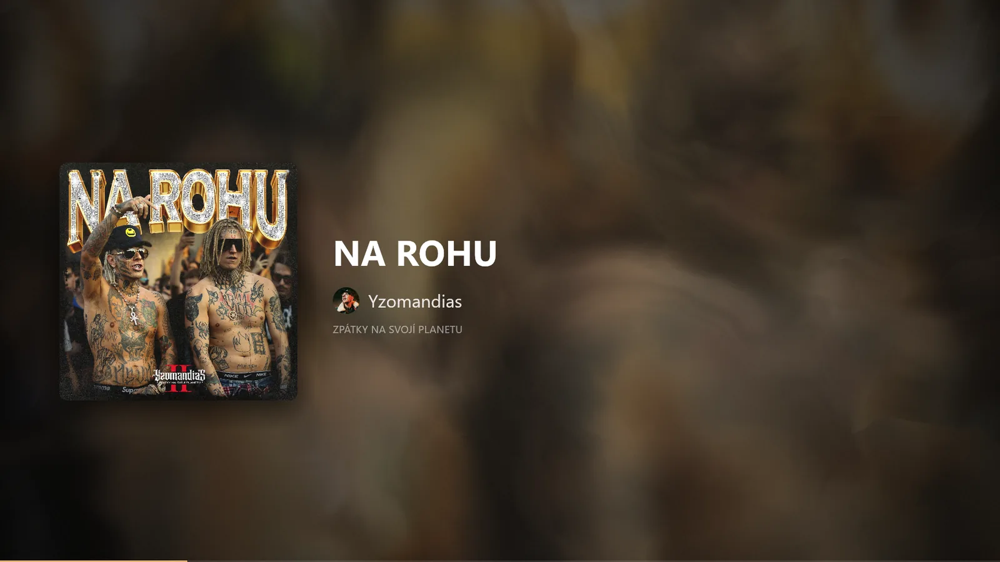
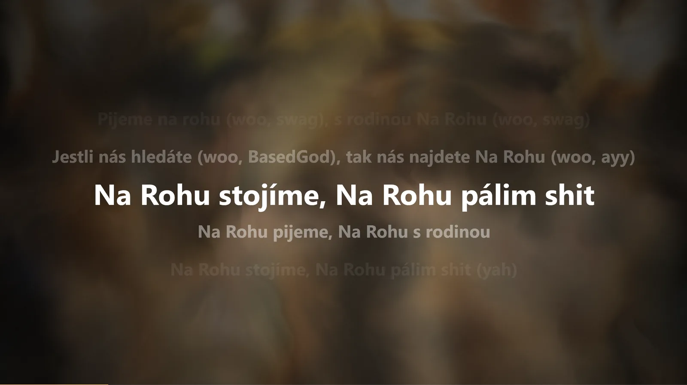

OZBEAT
Your music,on the big screen.
OZBEAT shows what your PC or BluOS speakers are playing, with artwork, synced lyrics and visuals that move with the music.
Anything on your PC
Spotify, your browser or any app in the Windows media controls.
BluOS speakers
Bluesound players on your network are found automatically.
Lyrics where others have none
Line by line, in time with the song. Even for many songs Spotify has no lyrics for.
Artwork background
The blurred cover flows behind everything, in the song's own colors.
See it play
Real recordings from OZBEAT. The background flows in the cover's colors and the lyrics follow the song.
Two screens
Press Ctrl+D. The cover stays on your monitor and the lyrics go big on the TV or second screen.


Also a screensaver
The same picture when your PC is idle, on all your monitors. Move the mouse or press a key to close it.
Download OZBEAT.scr- Download OZBEAT.scr. Run OZBEAT.exe once before, so your settings are ready.
- Right-click it and choose Install. The Windows screensaver settings open.
- Set how long to wait and click OK. The small preview in that window stays black. That's expected.
If Windows SmartScreen warns you, click More info and then Run anyway. The app isn't code-signed yet.